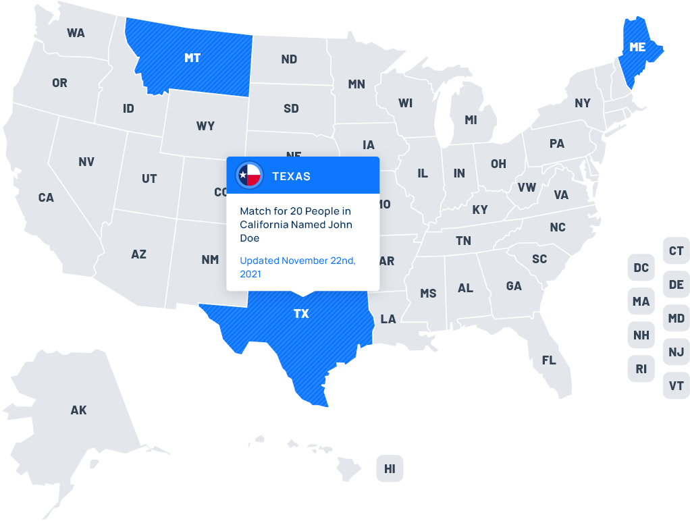

<section class='states-map-container  bgc-container'>
    <h2>People Record Break Down of John Doe by State for Your Convenience </h2>

    <div class='content'>
        
        </div>
        <div class="info">
            <svg xmlns="http://www.w3.org/2000/svg"
                width="20"
                height="20"
                viewBox="0 0 20 20">
                <g id="Group_27208"
                    data-name="Group 27208"
                    transform="translate(-722 -2133)">
                    <circle id="Ellipse_95"
                        data-name="Ellipse 95"
                        cx="10"
                        cy="10"
                        r="10"
                        transform="translate(722 2133)"
                        fill="#0e77ff" />
                    <path id="Path_35529"
                        data-name="Path 35529"
                        d="M1.92-3.52h2v-8h-2Zm0,4h2v-2h-2Z"
                        transform="translate(729.08 2148.52)"
                        fill="#fff" />
                </g>
            </svg>

            Drag the cursor left or right to see entire map
        </div>
</section>